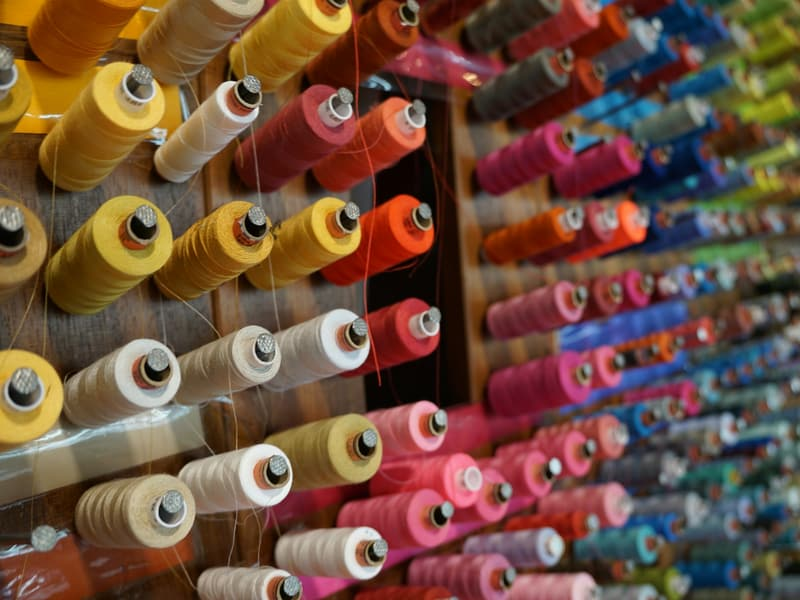

Alterations and tailoring · Seminaryjska 28, Kielce
Clothing alterations on Seminaryjska
Shortening, taking in, zip replacement and remakes. The thing you like can simply fit properly.
- Address
- Seminaryjska 28
25-372 Kielce - Google rating — 157 reviews
- 4,8
- Contact
- 663 182 557
01 — Services
What we do
Alterations and repairs. The exact range gets pinned down together — below is what a tailoring workshop does by definition.
-
1
quoted after we see it
Shortening and taking in
Trousers, skirts, dresses, sleeves — fitted to you.
-
2
quoted after we see it
Zip replacement
Jackets, trousers, bags. Usually cheaper than replacing the item.
-
3
quoted after we see it
Remakes
Changing the cut and fit of clothes that hang in the wardrobe unworn.
-
4
quoted after we see it
Repairs
Split seams, linings, small damage.
Quotes The price depends on what needs doing, which is why we quote after seeing the item rather than from a price list that would not fit it anyway.
02 — About
157 reviews, a 4.8 rating — and no trace online at all
The workshop is at Seminaryjska 28 in Kielce. 157 reviews at 4.8 is a great deal for a service people mostly recommend to each other in person.
Beyond the Google listing and a few directories there is nothing here — no site, no profile. Anyone looking for a tailor in Kielce has to find you by accident.
This page gives the address, the phone number and a clear description of what can be done. Nothing more is needed to get someone through the door with trousers to shorten.
- 4.8 from 157 Google reviews
- Alterations, remakes and repairs
- Quoted after seeing the item
- Seminaryjska 28, Kielce
03 — Gallery
The workshop up close

Illustrative photography under a free licence (Unsplash). Full list of photographers and sources: CREDITS.md.
04 — Contact
Get in touch
- Contact
- 663 182 557
- Address
- Seminaryjska 28
25-372 Kielce Get directions → - Opening hours
- Monday to be confirmed Tuesday to be confirmed Wednesday to be confirmed Thursday to be confirmed Friday to be confirmed Saturday to be confirmed Sunday to be confirmed
Hours still need confirming with the owner — the Google listing has none.
The phone is fastest — just say what needs altering.